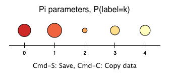
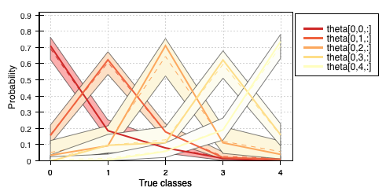
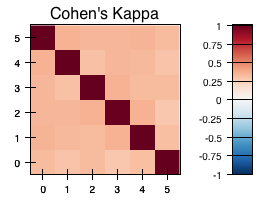

pyAnno 2.0 is a Python library for the analysis and diagnostic testing of annotation and curation efforts. pyAnno implements statistical models for inferring from categorical data annotated by multiple annotators:
- annotator accuracies and biases,
- gold standard categories of items,
- prevalence of categories in population, and
- population distribution of annotator accuracies and biases.
The models include a generalization of Dawid and Skene’s (1979) multinomial model with Dirichlet priors on prevalence and estimator accuracy, and the two models introduces in Rzhetsky et al.’s (2009). The implementation allows Maximum Likelihood and Maximum A Posteriori estimation of parameters, and to draw samples from the full posterior distribution over annotator accuracy.
pyAnno features an intuitive GUI to analyze annotation sets and visualize model parameters.
|  |  |  |
pyAnno is licensed under the modified BSD license (2-clause).